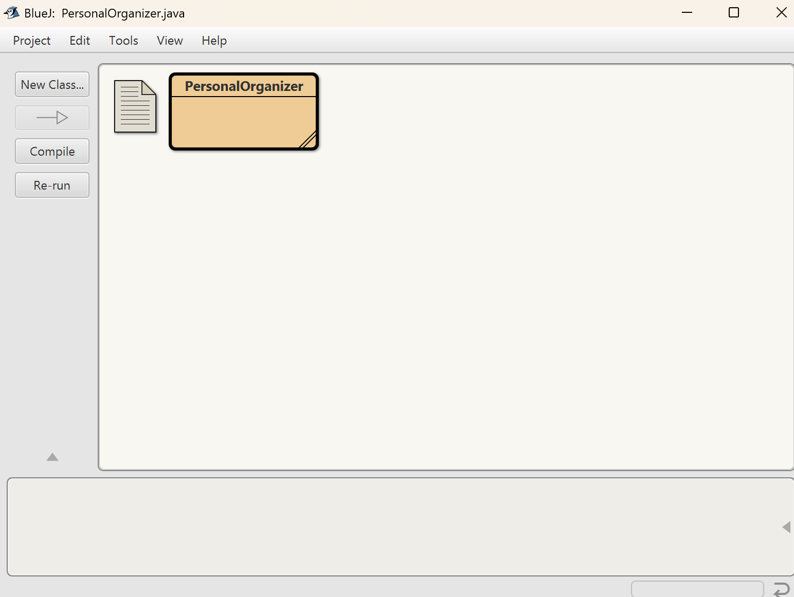

Kali ini saya diberikan tugas oleh pak fajar untuk membuat kode untuk Personal Organizer dengan menggunakan bahasa Java. Personal organizer itu seperti pengingat.
-
pertama-tama saya membuat kode nya di bluej terlebih dahulu.
di tugas kali ini saya hanya membuat dengan 1 class.
 -
berikut ini merupakan output dari kode saya. cara kerja nya adalah dengan menu lalu masukkan angka dari pilihan yang ada di menu tersebut setelah itu, jika memilih tambah tugas maka kita akan disuruh buat nama tugasnya, dan dapat dilihat dengan menggunakan 2 (Lihat tugas) jika tugas telah selesai maka bisa menggunakan fitur hapus data.

berikut ini merupakan link kode saya: